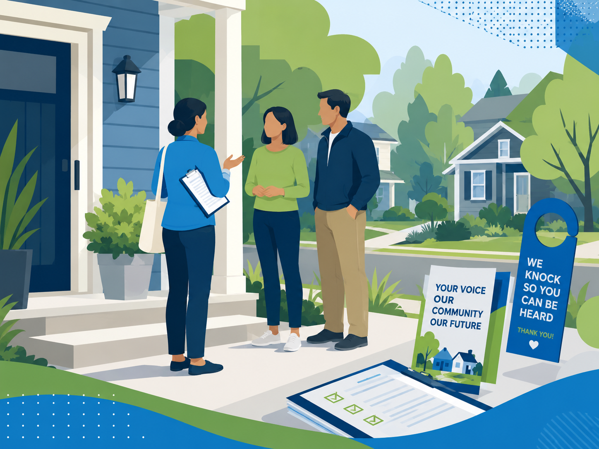

Who we are
Neighbors building Democratic power on the Eastside.
We are the grassroots Democratic organization for the 48th Legislative District, covering Bellevue, Kirkland, Redmond, and the surrounding Eastside.
Our mission
We organize neighbors to elect Democrats, advance progressive values, and make local government work for everyone on the Eastside. We meet every month, welcome newcomers, and turn shared values into wins at the ballot box.
Everything we do is powered by volunteers who live right here in the 48th.
{{ v.title }}
{{ v.body }}
What a legislative district organization does
Washington Democrats are organized by legislative district. As the team for the 48th, here is the hands-on work we do.
{{ a.title }}
{{ a.body }}
Executive board
A team of volunteers elected by the membership keeps the district party running.
To reach a board member, use our contact form and include their role in the subject.
{{ m.name }}
{{ m.pronouns }}
Precinct committee officers
PCOs are the only party officials elected directly by voters. They know their precinct, talk with neighbors about elections, help turn out the vote, and represent their precinct within the district party.
Many precincts in the 48th do not yet have a PCO. Filling those seats is one of the most powerful ways to build lasting Democratic strength here.
Become a PCO
Ready to get involved?
The best way to support the work is to become a member. It takes a few minutes and no donation is required.
Become a member